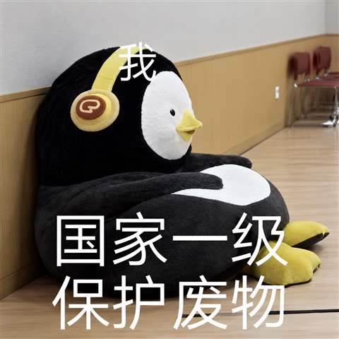
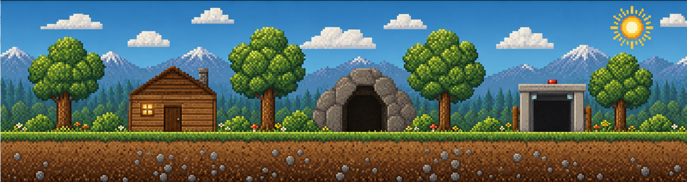
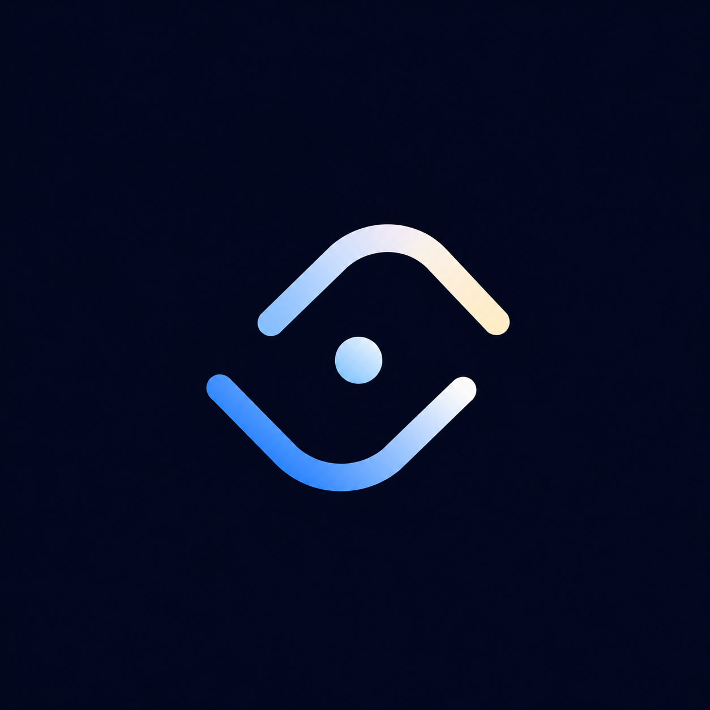

Want to dig in? ↗
Dietary guidance for people with chronic kidney disease.
01 / FEATURED · WECHAT MINI PROGRAM · SUMMER 2025
A selection of my projects. In my AI-assisted work, I also refine and add details, fix visual bugs, and improve the overall presentation.
Dietary guidance for people with chronic kidney disease.
01 / FEATURED · WECHAT MINI PROGRAM · SUMMER 2025
Simple AI-made board, card, and airplane games, started in June 2026 to enjoy while waiting for AI tasks.
02 / JUNE 2026 - PRESENT / SIMPLE VERSIONS
Eye-based communication for people with late-stage ALS. I designed the software using Codex at EniacXI.
03 / 2025 / ENIACXI HACKATHON